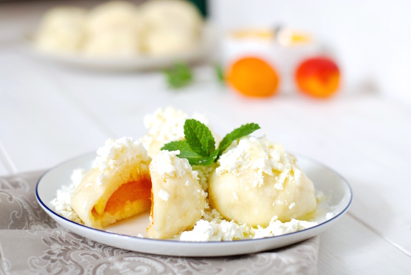

Mama Duck's Favorite Fruit Dumplings

Mama Duck's Ingredients
- cream cheese
- eggs
- flour
- oil
- salt
- fruit
Steps to take on your journey
- Work the cream cheese, egg, flour, salt and oil into a dough.
- Cut the dough in half and roll out each part into a sheet. Cut the dough into squares, wrap the fruit in each, close tightly and round into a dumpling shape.
- Place the prepared dumplings in boiling water, separate them from the bottom after a while and cook them for about 3-5 minutes as soon as they appear on the surface.
- Pour melted butter over the dumplings on the plate, sprinkle with sugar and add a dollop of sour cream.
- Sprinkle bugs on top if your heart desires